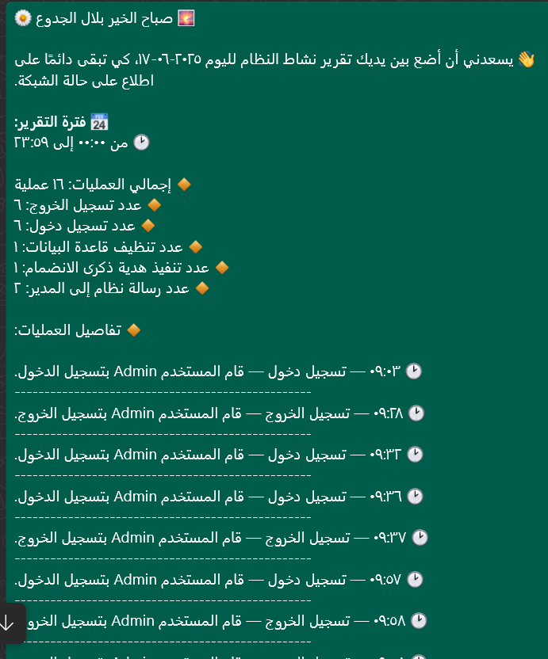
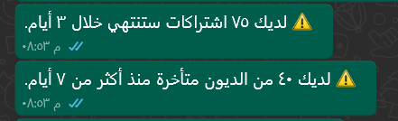
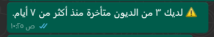
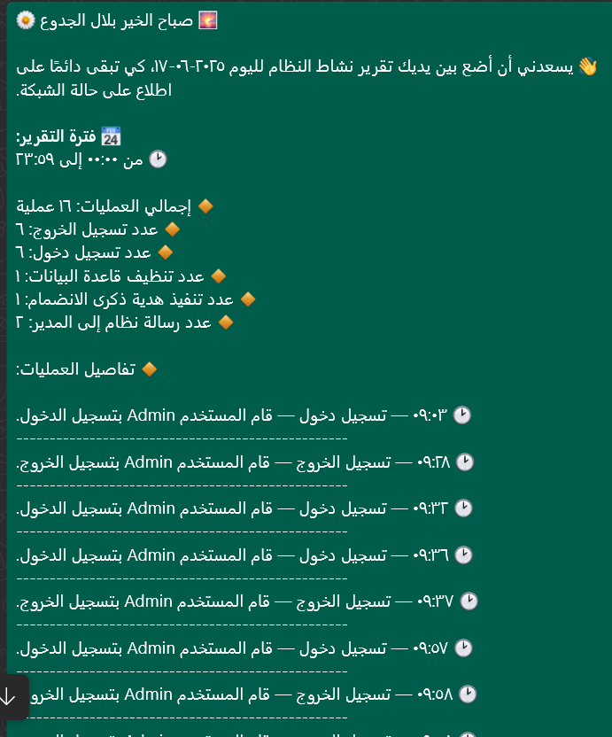
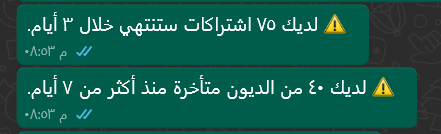
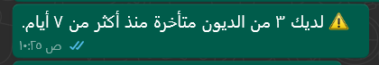

نظام تقارير واتساب الحيّة لمدير الشبكة
ControTik لا ينتظر منك أن تدخل لتفقد ما يجري… بل هو نظام حيّ ومبادر، يقوم بمراسلتك بشكل يومي عبر واتساب لإطلاعك على حالة الشبكة دون أن تطلب.
🧠 مدير افتراضي يعمل 24/7: يعتبر نظام المراسلة عبر واتساب بمثابة موظف خاص بك، يرسل لك تقارير ذكية تشمل كل ما يجري في شبكتك، مما يمنحك إشرافًا دائمًا حتى وأنت خارج الشبكة أو بعيد عن الحاسوب.
🔔 أنواع الرسائل المدعومة: يمكنك تخصيص الرسائل التي تصلك إلى مدير الشبكة حسب احتياجاتك، ومنها:
- 📆 تنبيه باشتراكات تنتهي خلال 24 ساعة
- ⚠️ إشعار بديون مستحقّة اليوم
- 📈 تنبيه بتجديد اشتراكات اليوم
- 📩 وجود ديون متأخرة لم يتم تحصيلها
- 🗂 تقرير يومي مفصّل عن كل أنشطة المستخدمين داخل النظام
- 🧹 تذكير دوري بعملية تنظيف قاعدة البيانات
🛠️ قابلية التخصيص: من خلال واجهة إعدادات أنيقة وسهلة الاستخدام، يمكنك تفعيل أو إيقاف أي نوع من الرسائل بنقرة زر. يتم حفظ الإعدادات تلقائيًا، وتُطبّق فورًا دون الحاجة لإعادة تشغيل النظام.
💬 شكل التقرير: يتم إرسال التقرير برسالة منسقة تتضمن:
- عدد الاشتراكات التي ستنتهي خلال اليوم
- قائمة بالديون الجديدة أو المتأخرة
- عدد عمليات التجديد أو الإضافة التي نفذها الموظفون
- وقت وتاريخ آخر نسخة احتياطية
- ملخص بأنشطة كل موظف إن كانت ميزة سجل العمليات مفعّلة
✅ ميزة احترافية: هذا النظام يحوّل مدير الشبكة من شخص ينتظر التقارير إلى شخص تُقدّم له البيانات تلقائيًا — بدقة، انتظام، وتنظيم — تمامًا كما تفعل أنظمة البنوك والمؤسسات الكبيرة.
 




